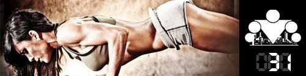

100 Дневный воркаут
<==== Вернуться к оглавлению
День 31. Почему я не худею?

Вы занимаетесь уже 30 дней по нашей обучающей программе
"100 Дневный воркаут"
, но почему-то результаты не такие как вы ожидали (хотя и начали появляться первые ласточки прогресса). Почему так происходит и что можно сделать для того, чтобы ускорить процесс? В сегодняшнем инфо-посте 13 самых распространенных причин!
1. Вы недавно начали заниматься
Если вы много лет подряд вели не самый активный образ жизни и чёрти как питались, а потом в один прекрасный момент решили полностью изменить себя, то это похвально, но вашему организму потребуется определённое время для того, чтобы начать перестраиваться. И чем больше времени вы жили "неправильно", тем дольше этот процесс будет занимать. Представьте себе аналогию с маховиком. Много сил требуется для того, чтобы его заставить вращаться, но куда больше, чтобы заставить его вращаться в другую сторону относительно текущего движения! Зато потом поддерживать вращение будет гораздо проще
2. Вы нетерпеливы
Если вы ставите перед собой глобальные цели, то и сроки им нужно ставить соответствующие! Невозможно сбросить 10 килограмм веса за неделю (чего бы там не обещали вам в интернете и глянцевых журналах), но вполне можно безопасно для здоровья сбрасывать по 250-500 грамм веса. Кажется что это мало? 500 грамм в неделю всего за 5 месяцев дают 10 килограмм потерянного веса, а совсем другая цифра, верно? Главное - двигаться вперёд, тогда со временем вы достигните цели!
3. Вы недостаточно едите
Недостаточное питание нарушает баланс гормонов, ослабляет иммунитет и может стать причиной различных заболеваний. И чем меньше калорий вы потребляете в сравнении с вашим уровнем комфорта, тем больше шансы сорваться с такого режима питания. Поэтому поговорка "тише едешь, дальше будешь" тут как нельзя кстати.
4. Вы думаете только о цифрах
Я уже неоднократно говорил о том, что вес - это всего лишь цифры на весах и не более того (120 кг могут выглядеть абсолютно по-разному). Поэтому гораздо более точным показателем будут объективные фотографии с разных ракурсов или измерение % жира в организме (напольные весы для этого не самый лучший инструмент).
5. Вы мало двигаетесь в течение дня
Сидячий образ жизни, наверное, одна из самых высоких цен, которую нам приходится платить за плоды цивилизации. Мы сидим дома за завтраком, сидим в машине или метро по дороге на работу/учебу, сидим на работе весь день, потом едем домой и сидим за компьютером дома. Весь день мы сидим. И это всё сказывается на нашем организме, который просто может не понять - зачем вам худеть, если и так всё прекрасно? Начните больше двигаться в течение дня. Например вы можете поставить машину чуть подальше от офиса и пройтись пешком, вместо лифта воспользоваться лестницей, делать перерывы в работе каждый час и совершать небольшие прогулки. Всё вместе это положительно скажется на вашем здоровье!
6. Вы мало спите
Сколько часов в день вы спите? Если меньше 7-9, то процесс похудения может затянуться, ведь сон влияет на очень большое количество процессов в нашем организме, начиная от аппетита и до метаболизма глюкозы. Так что постарайтесь спать больше, в идеале спите до тех пор, пока не будете сами просыпаться, потому что выспались!
7. Вы много нервничаете
Стресс - это очень сложное (и с точки зрения физиологии тоже) явление, детально рассмотреть которое в рамках данной статьи не представляется возможным. Но следует отметить, что уровень стресса напрямую влияет и на уровень гормонов, и на мотивацию, и на похудение! Так что старайтесь поменьше нервничать, особенно по пустякам! Как говорилось в одной прекрасной книжке "DON'T PANIC" (не паникуй).
8. Вы непостоянны
Мы уже писали о том, что именно регулярные тренировки приводят к успеху, в то время как непостоянные и хаотичные попросту не работают.
9. Вы застряли на месте
Чаще всего похудение не является плавным, если вы придерживаетесь детально плана калорий. Поэтому если вы заметили, что застряли и уже несколько недель не двигаетесь дальше, то это первый сигнал к тому, что пора что-то менять. Попробуйте внести изменения в диету, в тренировки или ещё что-нибудь. Представьте, что вы стоите перед закрытой дверью с ворохом ключей в кармане и вам просто нужно подобрать подходящий, чтобы продолжить путь
10. Вам не нужно больше худеть
Это довольно интересный пункт, потому что вы никогда не задумывались, что, может быть, вам просто напросто не надо дальше худеть? Возможно, что вы уже добились оптимального для себя результата и теперь задача заключается в том, чтобы изменить соотношения жира и мышц?
11. Ваши тренировки недостаточно интенсивны
Если вы хотите изменить себя, вы должны выкладываться на 100%. Я довольно часто вижу людей, которые тренируются "спустя рукава", делают перерывы по 5 минут между подходами, да ещё успевают поболтать с друзьями. Неудивительно, что за всю тренировку у них на лбу даже капельки пота не выступило. Узнали себя? Тогда забудьте о результатах! Ведь чтобы их достичь, нужно действительно попотеть!
12. У вас проблемы со здоровьем
Есть довольно маленькая вероятность, что состояние вашего здоровья не позволяет вам похудеть (например у вас низкий уровень гормонов щитовидной железы). Такое действительно возможно, но стоит помнить о том, что чаще всего состояние здоровья - это следствие образа жизни, а не причина. Но, всё же, обратитесь к врачу, чтобы развеять сомнения.
13. Вы до сих пор ничего не поменяли в жизни
Не стоит думать, что вот сейчас вы постараетесь, попотеете и похудеете, и на этом всё закончится. Нет! На этом всё только начнётся! Ваш вес, ваш внешний вид, ваше самочувствие - это всё не просто результат диеты и тренировок, это результат ведения определённого образа жизни! Помните с чего мы начиналй С того, что организму требуется определённое время, чтобы начать перестраиваться из "ленивого" состояния в "активное". Тоже самое происходит и когда вы уже ведёте активный образ жизни! Но, скажу честно, быть здоровым, сильным и красивым гораздо приятнее ;)
======> День 32. Почему я не могу набрать массу?